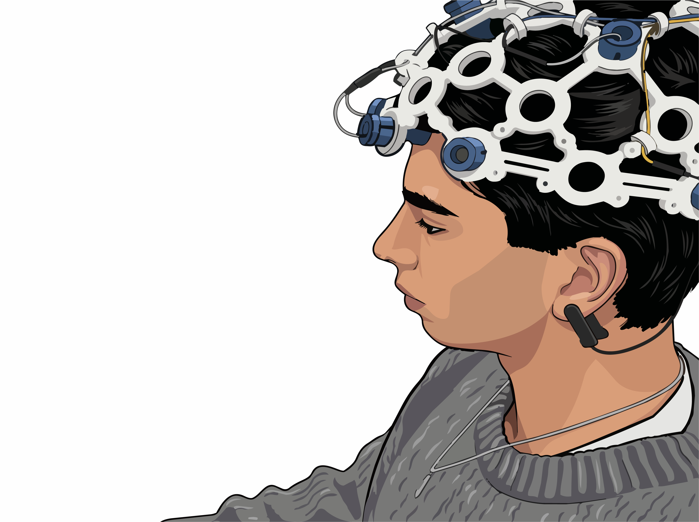
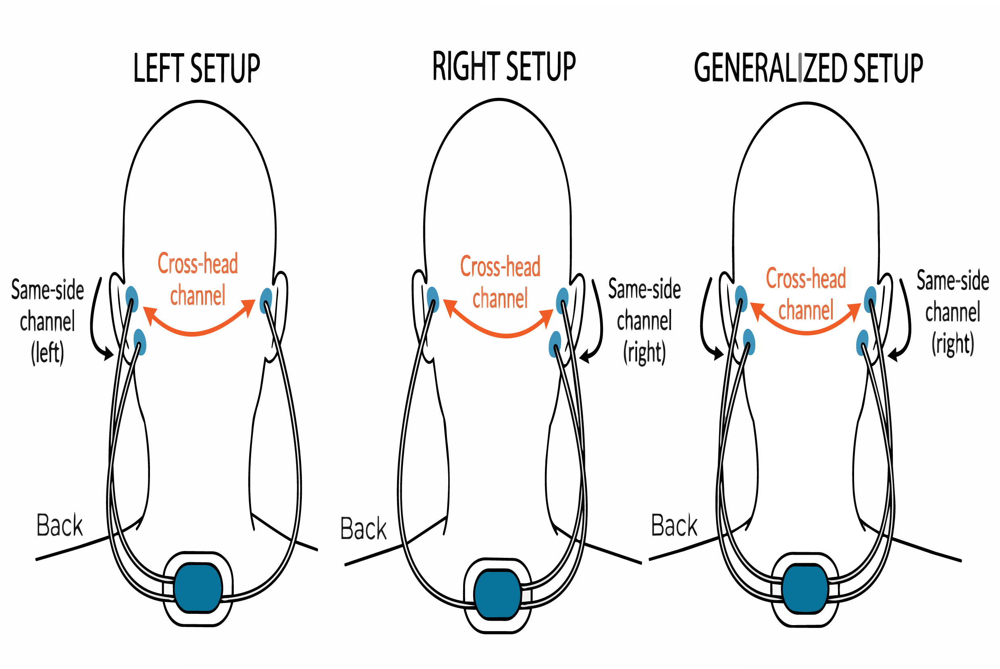
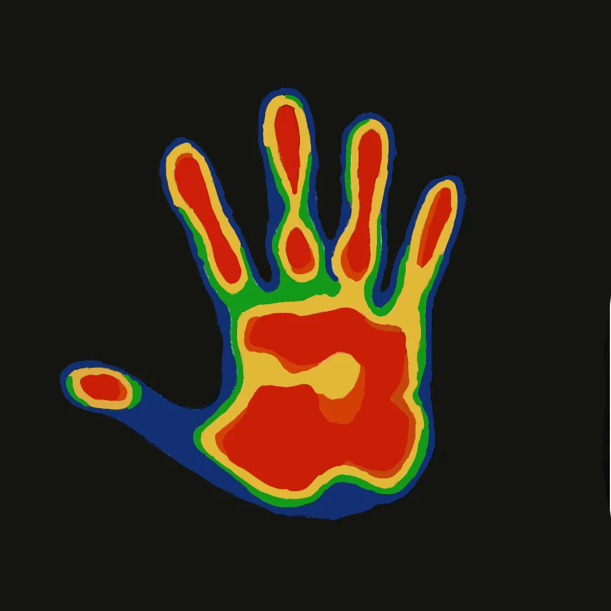
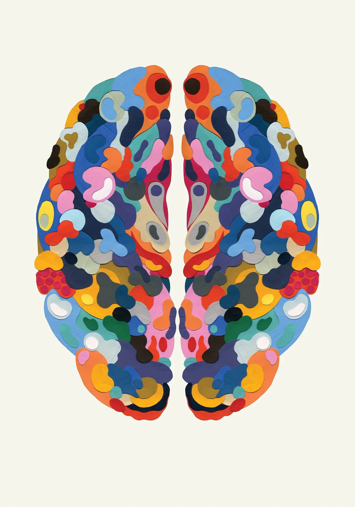
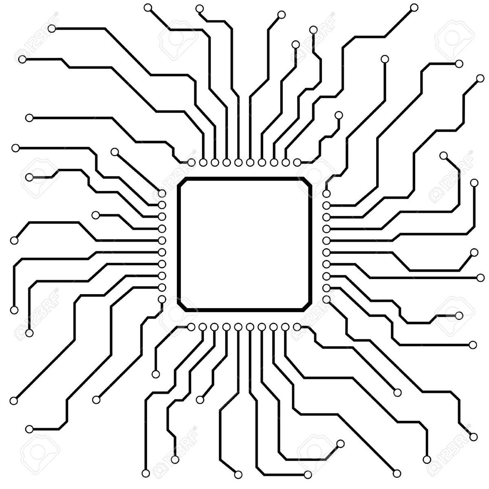

The Global Crisis
The Problem
Every day, people living with epilepsy face the uncertainty of unpredictable seizures that can occur without warning. Because many seizures happen at home, at school, or at work, patients spend the vast majority of their lives far from continuous medical supervision. This critical gap in care highlights the need for a practical solution capable of monitoring neurological health continuously in real-world environments.
Our Vision
Our long-term vision is to shift epilepsy care from reactive to proactive. By collecting continuous physiological data, we aim to uncover the hidden precursors to seizure events. The system is designed to seamlessly integrate into everyday routines, feeding intelligent algorithms that can estimate seizure risk over time. Ultimately, we want to empower patients with predictive insights and provide clinicians with longitudinal data to optimize treatment strategies.
Research Foundation
This project builds upon years of research in wearable neurotechnology, multimodal biosignal analysis, and seizure prediction using artificial intelligence. Previous studies have demonstrated that combining multiple physiological signals can improve the understanding of seizure-related changes compared with using EEG alone. Our work extends these research directions by focusing on affordability, personalization, and accessibility, particularly for resource-constrained healthcare systems.
Designed for Everyday Life
The Hardware Form Factor
Unlike traditional EEG systems that require dozens of scalp electrodes and specialized clinical environments, our platform explores a lightweight around-the-ear configuration. Multiple electrode arrays record physiological signals locally, while a compact module positioned behind the neck handles signal acquisition, wireless communication, and onboard processing. This approach is intended to balance signal quality with the comfort necessary for continuous daily wear.


Methodology & Technology

Multimodal Sensing
The wearable captures a holistic view of the nervous system through four complementary modalities: electroencephalography (EEG), electrocardiography (ECG), electromyography (EMG), and inertial motion. Rather than relying on brainwaves alone, analyzing how the brain, heart, and muscles interact provides a much more robust physiological signature of a patient's underlying neurological state.

Machine Learning Pipeline
At the core of the platform is a multimodal AI architecture. Raw biosignals undergo real-time processing on the device to extract meaningful features. These are then fused within a deep learning pipeline that analyzes temporal and frequency-domain characteristics. Over time, these models can adapt to individual patients, learning their unique physiological baselines to enable highly personalized monitoring and decision-support.

Development Roadmap
The project is being developed through a staged research approach. The first phase focuses on validating multimodal AI models using publicly available clinical datasets. This will be followed by the development of a functional wearable prototype capable of collecting synchronized physiological signals in real time. Subsequent phases will involve hardware optimization, personalized machine learning, institutional collaborations for clinical evaluation, and eventually large-scale validation studies aimed at translating the technology into real-world healthcare settings.
Impact
Our long-term mission is to make advanced neurological monitoring accessible to everyone, regardless of geography or economic resources. While the initial focus is epilepsy, the underlying platform has the potential to support broader neurological applications, including sleep disorders, movement disorders, neurorehabilitation, and future brain-computer interface research. By bringing intelligent monitoring beyond the hospital, we hope to contribute to a future where neurological conditions can be understood continuously rather than intermittently, making healthcare more proactive, personalized, and accessible.